Celebrations
Emily + Connor
When two theatrical production professionals wed, the creativity has no limit.


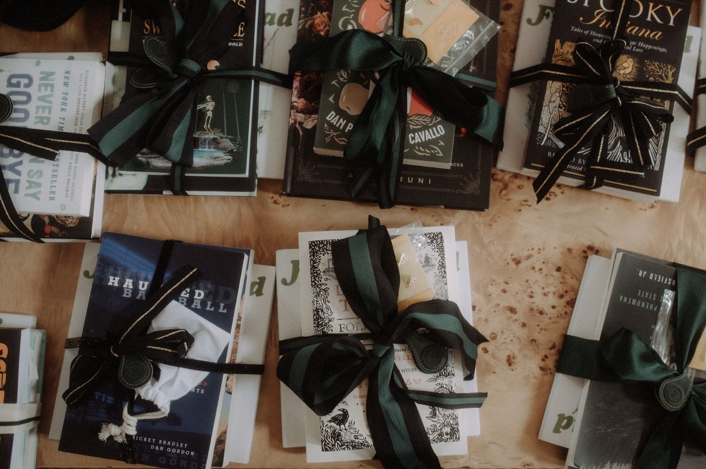
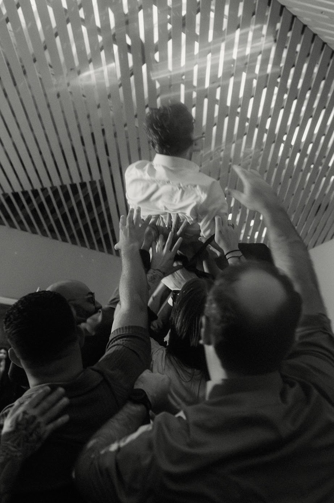
One image never tells the whole story. Here are a few more frames from the weddings, community work and wonderfully specific worlds EEK has helped make real.
When two theatrical production professionals wed, the creativity has no limit.


Color, character, layered details and a room full of people completely in on the story.

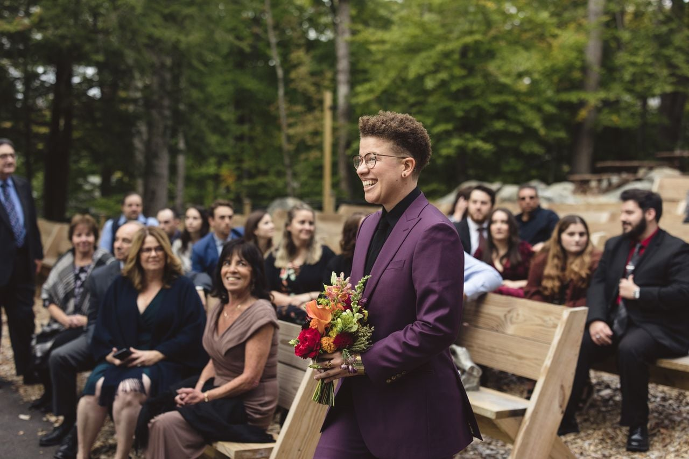
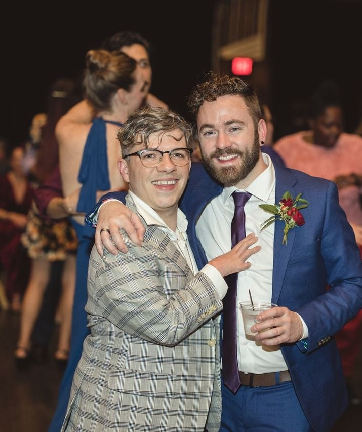
Bold color, playful medieval details, champagne, armor and a tiny dragon on the cake — a celebration that fully committed to its own world.


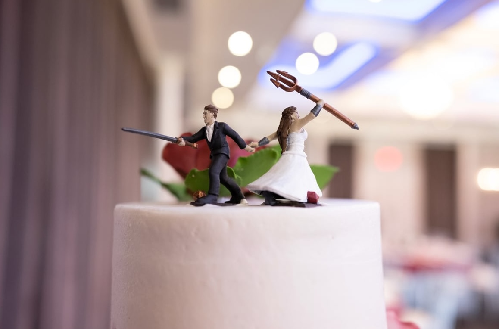
A joyfully specific celebration with story-rich details, adventurous touches and the kind of personalized moments guests remember.
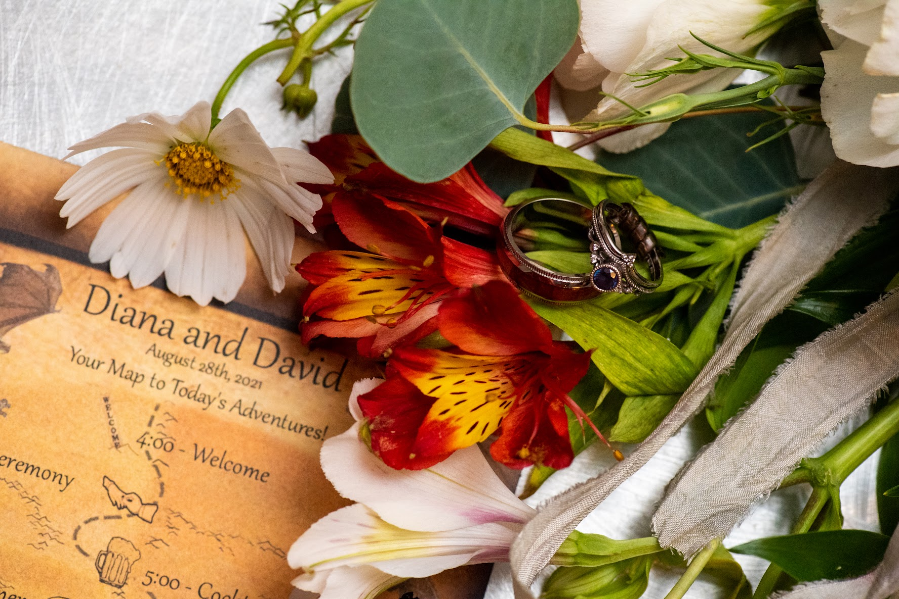
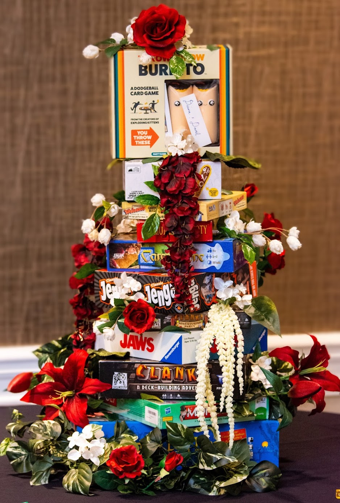
EEK’s Girl Scouts work includes live and virtual community programming, including the Campfire Chat series.
Watch the Campfire Chats ↗
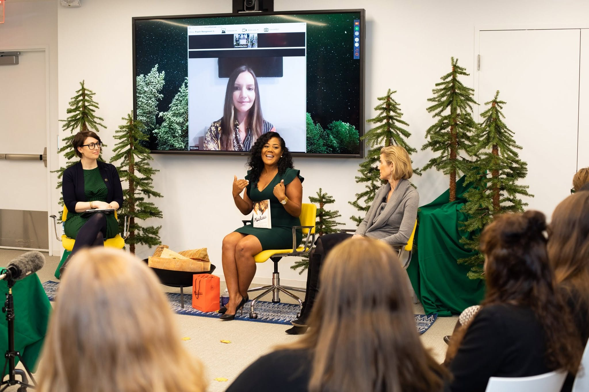
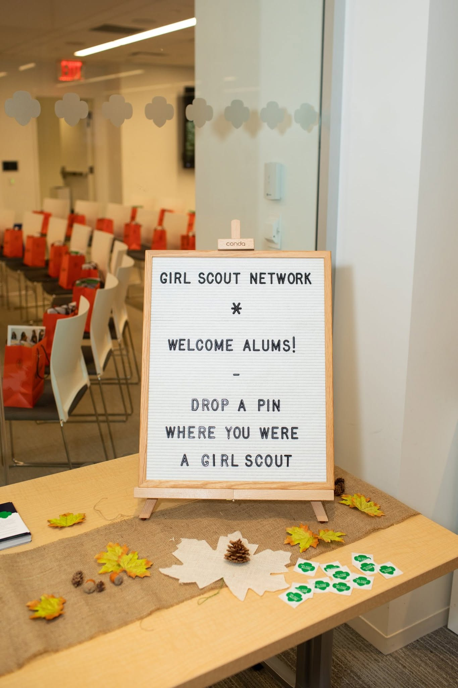
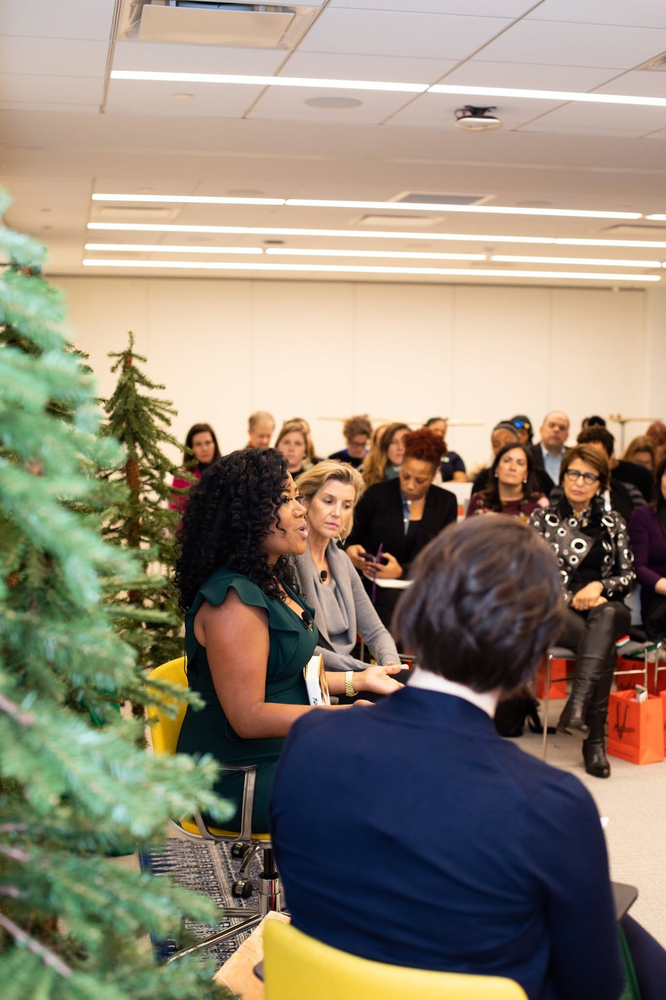
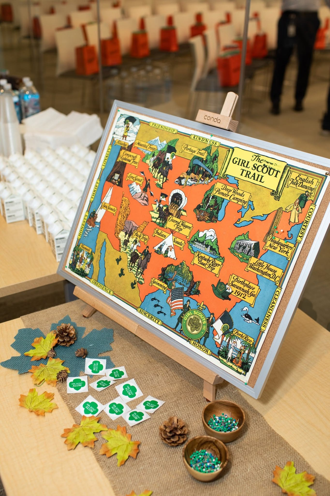
A polished city celebration and a reminder that not every great event has to arrive wearing armor.
View slideshow ↗
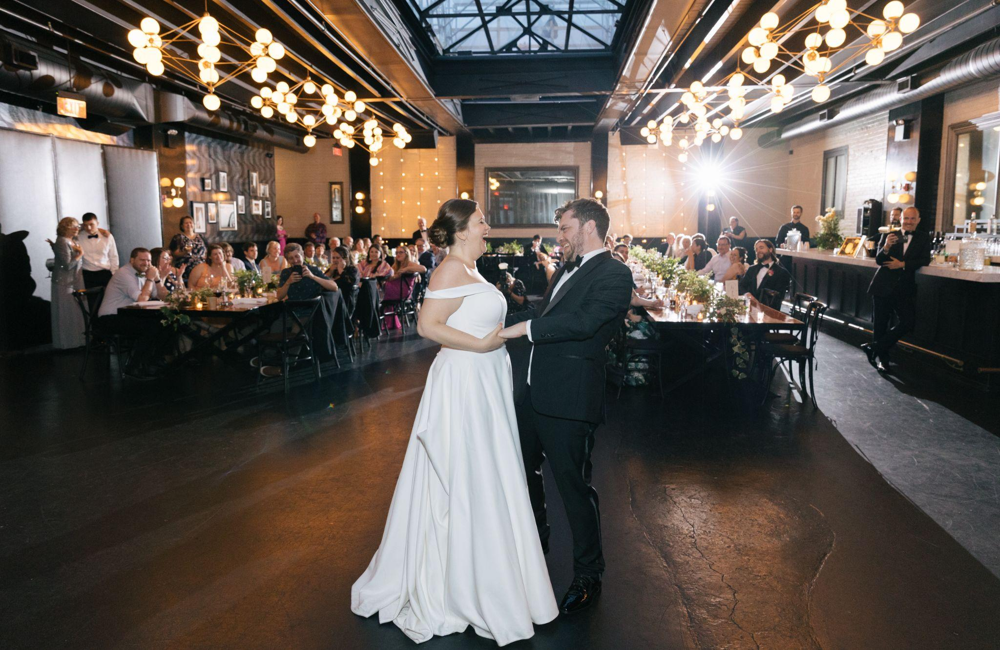
Head back to the Vibe Forge or tell EEK the detail you think might be “too much.” That is usually where the good stuff starts.